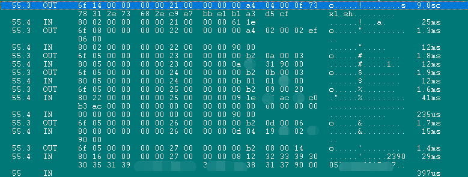

三代社保卡开发
二代卡读取社保卡非加密信息
1.根据 “社会保障卡文件结构和数据项（V2.0）”中的说明
社会保障系统环境 SSSE 的应用标识符
#-------------------------------------+------------------------------------------------------------+
|DDF |应用标识符内容 | 应用标识符 |
|SSSE | sx1.sh.社会保障 | 7378312E73682EC9E7BBE1B1A3D5CF |
#-------------------------------------+------------------------------------------------------------+
基本应用数据区文件特性
#----------------------------+-------------------+------------------------+-----------+--------------+------------+-------+
|文件定义 | 文件标识符 | 短文件标识符 |读控制 |写控制 |文件结构 |类别 |
|发卡机构数据文件 |EF05 |05 |无 |UKSSSE | 变长记录 | 启用|
|持卡人的基本信息文件|EF06 |06 |无 |UKSSSE | 变长记录 | 启用|
#----------------------------+-------------------+------------------------+-----------+--------------+------------+-------+
数据项的格式与属性
#----------------------------+-------------------+------------------------+-----------+--------------+------------+
标志 数据项 类型 长度 所属文件 备注
+----------------------------+-------------------+------------------------+-----------+--------------+------------+
01 卡的识别码 cn 10 |
02 卡的类别 an 01 |
03 规范版本 an 04 | SSSE
04 初始化机构编号 cn 0C | "EF05"
05 发卡日期 cn 04 |
06 卡有效期 cn 04 |
07 卡号 an 09 |
+----------------------------+-------------------+------------------------+-----------+--------------+------------+
08 社会保障卡号码 cn 12 |
09 姓名 an 1E |
4E 姓名扩展 an 14 | SSSE
0A 性别 cn 01 | "EF06"
0B 民族 cn 01 |
0C 出生地 cn 03 |
0D 出生日期 cn 04 |
+----------------------------+-------------------+------------------------+-----------+--------------+------------+
可以获知，以上数据，可以直接读出，不需要走加密模块。
---------------------------------------------------------------------------------------------------------------------------
2. 选用接触式读卡器，接触式读卡器可以采用SIM卡读卡器，由于SIM卡读卡器，便宜，易于购买。如果采用带安全模块的接触式读卡器，一般
设备都无法购买到，不卖个人。SIM卡读卡器无安全模块，故适合读取非加密数据。当然可以选用其他接触式读卡器，ACR系列的接触式读卡器
由于不支持发送APDU指令，故不适合读取卡内数据
我购买的SIM卡读卡器，相关信息
符合PC/SCVersion 1.0/2.0标准并通过微软认证，电脑&网路使用安全控制(Access Control),电子商务(e-Commerce)或会员管理机制(Royal program)
符合财金规范第二代IC晶片金融卡(FISC II)
可读写SLE4418/4428、SLE4432/4442、SLE4436/5536及I2C Memory卡
可读符合ISO7816-3; T=0 and T=1通讯协定之CPU卡
---------------------------------------------------------------------------------------------------------------------------
3. 使用Windows自带的智能卡API开发读取卡内数据，关于CPU卡内数据文件结构和流程，参考我的文章。
windows中调用智能卡，需要包含winscard.h，Winscard.lib，在winscard.h中包含了许多智能卡的API，https://docs.microsoft.com/zh-cn/windows/win32/api/winscard/
主要用到的API有：SCardEstablishContext；SCardListReaders；SCardConnect；SCardStatus；SCardBeginTransaction；SCardTransmit；SCardReconnect；
SCardEndTransaction；SCardDisconnect；SCardFreeMemory。
关于怎么调用这些API，就不在这里重复说了，网上一搜都有。
---------------------------------------------------------------------------------------------------------------------------
4. 发送APDU指令
1】因为上文中，已经说明，社会保障系统环境 SSSE 的应用标识符，所以直接select这个，0x00,0xa4,0x04,0x00,0x0f,0x73,0x78,0x31,0x2E,0x73,0x68,0x2E,0xC9,0xE7,0xBB,0xE1,0xB1,0xA3,0xD5,0xCF
2】继续select，0x00,0xa4,0x02,0x00,0x02,0xEF,0x06,0x00
3】读取数据，0x00,0xb2,0x0a,0x00,0x03；0x00,0xb2,0x0b,0x00,0x03；0x00,0xb2,0x0d,0x00,0x06；
0x00,0xb2,0x09,0x00,0x20；0x00,0xb2,0x08,0x00,0x14
同理，select EF05，读取数据

内部/外部认证
3.3.1 内部/外部认证：内部认证和外部认证是一种互认证过程。内部认证是用读卡设备来认证卡， 保证卡的合法性， 内部认证可以防止伪造的卡在读卡设备上进行操作。外部认证是用卡来认证外部读卡设备的合法性，外部认证可以防止恶意对卡进行操作，读取和更改卡内信息。外部认证还可以改变社保卡的安全状态，一般卡内存储了多个外部认证密钥，每个外部认证密钥所能改变的安全状态不一样，在进行外部认证时，必须通过密钥索引参数选择相对应的外部认证密钥完成外部认证。
数据的安全计算
3.4.6 数据的安全计算
数据的安全计算是指对外部提供的数据进行 DES变换。主要计算有：DES加 密、DES解密、DES MAC计算、Triple-DES加密、Triple-DES解密、Triple-DES MAC计算。
PSAM卡中定义参与安全计算的 KEY固定地来源于临时密钥寄存器，为此完成数据的安全计算必须经过两个步骤：
1. 使用 DELIVERY KEY 或 DELIVERY SESSION KEY 指令在临时密钥寄存器中 准备好参与计算的 KEY；
2．使用 CIPHER DATA 指令对外部提供的数据用产生的临时密钥进行处理。
三代与二代社保卡的区别
PSAM卡升级：需要三代PSAM卡配套；
3.0卡读个人基本信息EF06需要RKSSSE密钥外部认证

2.0卡或3.0卡读个人基本信息时需读出“姓名扩展”，与“姓名”拼接后返回完整姓名。3.0卡的SSSEEF06个人基本信息文件增加了读控制密钥“RKSSSE”，读取该文件信息前需进行外部认证。PSAM卡内没有RKSSSE密钥（3.0卡读个人基本信息需要RKSSSE密钥外部认证）
三代二代社保卡区别： EF05和EF06的区别，三代的EF06需要SAM卡才能读取
开发关键
测试时，测了读取某标签2次失败之后就必须成功读一次该标签，否则会锁卡。例如：读身份证号失败两次，必须使用T6读卡器DEMO读基本信息(内含身份证号)成功一次重置错误计数；其他标签同样处理。
比对上一层的dll日志与底层BusHound日志得出APDU流程与参数
3.0卡过程密钥的计算方法
3.4.1.2 过程密钥的计算方法 2
该方法是通过对指定的双倍长密钥进行左右异或计算来产生单倍长过程密钥。
KEY_L KEY_R
过程密钥 把原始数据左8字节和右8字节进行XOR运算(左右异或)即可得到结果数据
原始数据：25b56962ee5d1e145ed94b45fea64d84
结果数据：7b6c222710fb5390
原始数据：7a0570c2cf037db253f80cf939eaa505
结果数据：29fd7c3bf6e9d8b7
原始数据：8f7f7b41462425d898f4b564145353db
结果数据：178bce2552777603
3.0卡外部认证，读取社保卡加密信息
以读取个人医保银行账号为例的步骤
●3:选择三代卡SSSE目录定义文件DDF“sx3.sh.社会保障(7378332E73682EC9E7BBE1B1A3D5CF)”
<-00 A4 04 00 0F 73 78 33 2E 73 68 2E C9 E7 BB E1 B1 A3 D5 CF “SELECT”SSSE 的应用标识符“sx3.sh.社会保障(7378332E73682EC9E7BBE1B1A3D5CF)”三代卡 SSSE目录定义文件（DDF） ->61 18 <-00 C0 00 00 18 GET RESPONSE 18=24
->6f 16 84 0f 73 78 33 2e 73 68 2e c9 e7 bb e1 b1 a3 d5 cf a5 03 88 01 01 90 00 执行成功 9000
●4:选择DF01社会保障应用目录文件
<-00 A4 04 00 06 D1 56 00 00 05 90 SELECT 选择DF01社会保障应用目录文件(FID‘DF01’;AID‘D15600000590’)
->61 0A <-00 C0 00 00 0A GET RESPONSE 0A=10 ->6f 08 84 06 d1 56 00 00 05 90 90 00 执行成功 9000
●4:产生随机数
<-00 84 00 00 08 “GET CHALLENGE”:Le ‘04’或‘08’或‘10’ 产生随机数
->34 4e bd 50 88 64 00 76 90 00命令执行成功 获得随机数 344ebd5088640076
●5:DES计算初始化
<-BFDE485d20866037000003eb703337303030317378344ebd50886400760000000000000000 //BF|DE=DES计算初始化|48=psam用途|5D=标识|20=32数据长度|LSKEY31+'370001sx'(3337313730307378)+随机数 ->90 00 执行成功 ‘9000’
●6:DES计算 80FA000008+1122334455667788
<-80FA00001011223344556677880000000000000000 “80|FA=DES计算|00=无后续块加密|00|Lc数据长度:DES算法当P1≠‘05’时‘08’≤Lc≤‘40’(模8)|待处理数据0x10字节|Le返回数据长度 ->61 10 <-00 C0 00 00 10 GET RESPONSE 10=16
->25 b5 69 62 ee 5d 1e 14 5e d9 4b 45 fe a6 4d 84 90 00 执行成功 (ENDATA1+9000)得到结果
ENDATA1:25b56962ee5d1e145ed94b45fea64d84 通过左右XOR运算 => ENDATA2:7b6c222710fb5390
●7:外部认证 0082000710+ENDATA2+1122334455667788(9000)
<-00820007107b6c222710fb53901122334455667788"EXTERNAL AUTHENTICATION命令":00|82|00|密钥号=07|Lc:10/11|Data鉴别用数据=Byte1到8鉴别数据+9到16鉴别所需的原始信息(+17可选密钥版本)。 //外部认证 07=密钥标识 ->90 00 执行成功 ‘9000’
●8:读个人医保账户
<-00 B2 E9 00 2A “READ RECORD":P1记录号或记录标识符|P2引用控制参数:00对当前文件进行操作|Le:‘00’或待读数据长度" 银行卡卡号 个人医保账户
->e9283b363231373231313630323031343434353531363d34393132313230373632393939313636323f009000 执行成功 读出银行卡号个人医保账户 ?;6217211602014445516=49121207629991662?